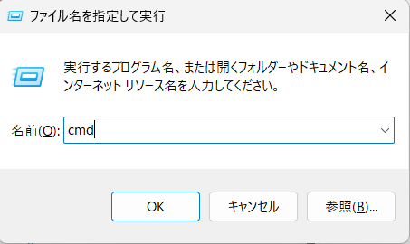
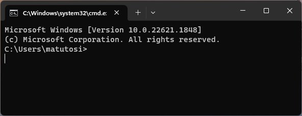
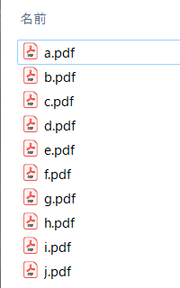
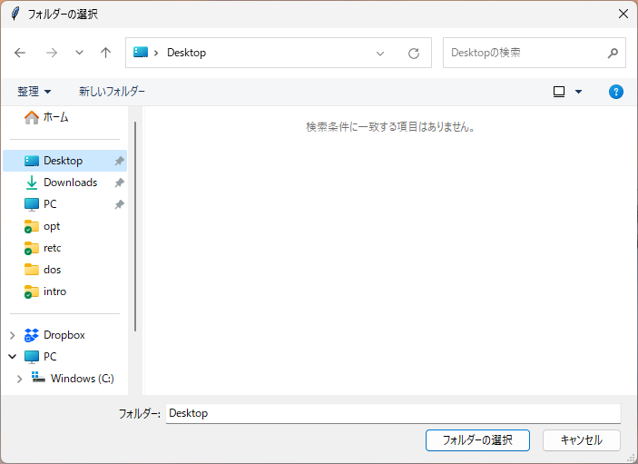

Chap. 8 fsでファイル操作
Windowsならコマンドプロンプト(古い言い方なら，いわゆるdos窓)，MacならTerminal，Linuxならシェルで，各種ファイル操作をコマンドラインで実行できる． もちろん，マウスを使った操作でも構わないが，名前の変更やファイル名によるディレクトリの振り分けを大量にするなら，マウス操作よりもコマンドを使った操作が早いし確実である． なお，Windowsでは [Win] + [R] - [ファイル名を指定して実] - [cmd] でコマンドプロンプトが， Macでは[Command] + [Space] - [Spotlight検索] - [terminal] でTerminalが起動する．


コマンドプロンプトやバッチファイル(あるいはシェルスクリプト)などでの操作に慣れていれば，それが便利である．
ただ，dosコマンドの変数の扱いは，慣れていないと結構難しい(慣れていても?)．
そんなときは，Rの関数(system()やshell())と，dosコマンドを駆使して，ファイル名を取得・名前の変更をすることができる．
既にdosコマンドを書いていれば，system()などを使うのは良い方法である．
ただし，複数のOSを使う場合はコマンドが異なるためそれぞれでコマンドを覚えなければならず，またOSとコマンドとの対応で混乱することがある．
OSごとに異なるコマンドを覚えるよりも，Rの関数で操作可能ならばどのOSでも同じように動作してくれて楽ができる．
Rのbaseパッケージにはファイル操作のための関数が多くある．
例えば，list.files()でファイル名一覧を取得でき，file.rename()でファイル名の変更ができる．
しかし，baseの関数は名前が分かりにくい点や引数の一貫性が無い点などの難点がある．
これは，Rが発展していく中で徐々に関数が追加されたことによるようだ．
fsパッケージでは，baseの関数を整理するとともに，新たな有用な関数が追加されている． そのため，命名規則が一貫しており，ベクトル化した引数を受けとることができる．
なお，fs，base，シェルの詳細な比較が，以下のURLにあるので，参照してほしい．
https://cran.r-project.org/web/packages/fs/vignettes/function-comparisons.html
8.2 シェル，baseパッケージ, fsパッケージ
a.pdf, b.pdf, …, j.pdfを01.pdf, 02.pdf, …, 10.pdfのように10個のファイル名を変更したいとする．


8.2.1 シェルを使う
シェルなら，以下のようなコマンドだ． dosコマンドの変数やループなどを駆使すると，もっと短く書けるのかもしれないが，残念ながら私にはそのような技術がない． テキストエディタで書いてもそれほど時間がからないだろうが，ファイル数が多くなれば大変だ．
rename a.pdf 01.pdf
rename b.pdf 02.pdf
rename c.pdf 03.pdf
...
rename j.pdf 10.pdf8.3 fsの関数
パス操作(path_*)，ディレクトリ操作(dir_*)，ファイル操作(file_*)の関数に分けることができる．
パス操作には，baseやシェルにはない機能が多くあって，使いやすい．
拡張子を取り除く関数を自作したことがあるが，同じような関数があることを見つけたときには，下位機能の車輪を再発明してしまったと後悔した．
しかも，fsのほうがしっかりしているはずだ．
fs，base，シェルの比較は次のURLを参照して欲しい．
https://cran.r-project.org/web/packages/fs/vignettes/function-comparisons.html
8.3.1 パス操作
パス操作はfsパッケージの関数を使うと簡単にできる． 特に，パスからディレクトリ名，ファイル名，拡張子を抽出してくれる関数は便利だ． パス操作の関数を自作するには，自作してもある程度はできるが，stringrを駆使しなければならない． 自作した関数にはバグが入っている可能性がある． 不具合を防ぐためにも，fsパッケージのパス関数を使うほうが良さそうである．
path("top_dir", "nested_dir", "file", ext = "ext") # パス作成
path_temp(), path_temp("path") # 一時パス名の作成
path_expand("~/path") # "~"をユーザのホームディレクトリに変換したパス
path_dir("path") # パスからディレクトリ名抽出
path_file("path") # パスからファイル名抽出
path_ext("path") # パスから拡張子抽出
path_ext_remove("path") # パスから拡張子を削除
path_home() # ホームディレクトリ
path_package("pkgname", "dir", "file") # パッケージのパス名
path_norm("path") # 参照や".."の削除
path_real("path") # 実体パス(シンボリックリンクを実体パスに)
path_abs("path") # 絶対パス
path_rel("path/foo", "path/bar") # 相対パス
path_common(c("path/foo", "path/bar", "path/baz")) # パスの共通部分
path_ext_set("path", "new_ext") # 拡張子変更
path_sanitize("path") # 無効な文字を削除
path_join("path") # 結合
path_split("path") # 分割8.3.2 ディレクトリ操作
シェルやbaseでも同様の機能があるが，複数処理のdir_map()やツリー表示のdir_tree()は単純に嬉しい．
dir_ls("path") # 一覧
dir_info("path") # 情報
dir_copy("path", "new-path") # 複写
dir_create("path") # 作成
dir_delete("path") # 削除
dir_exists("path") # 有無確認
dir_move() (see file_move) # 移動
dir_map("path", fun) # 複数処理
dir_tree("path") # ツリー表示 8.3.3 ファイル操作
ファイル操作はシェルやbaseとそれほど変わらない感じがする．
file_chmod("path", "mode") # 権限変更
file_chown("path", "user_id", "group_id") # 所有者変更
file_copy("path", "new-path") # 複写
file_create("new-path") # 作成
file_delete("path") # 削除
file_exists("path") # 有無確認
file_info("path") # 情報
file_move("path", "new-path") # 移動
file_show("path") # 開く
file_touch() # アクセス時間等の変更
file_temp() # 一時ファイル名の作成 8.4 fsを使ったファイル操作例
ごく個人的なことだが，Rのバージョンアップ時にはRconsoleとRProfile.siteを古いバージョンから複製して，カスタマイズした設定を引き継いでいる． バージョンアップをそれほど頻繁にしないのであれば，手作業でコピーしてもそれほど問題はない． 普通のRユーザなら常に最新版を使わなくても良い． ただ，パッケージの開発をしていると，開発中のパッケージが依存しているパッケージが最新版のRで開発されている旨の警告がでることが結構ある． ごく最近までは手作業でファイルをコピーしていたが，よく考えたらこういった作業は自動化するべきだと気づいた． そこで，fsパッケージを使ってファイルをコピーするスクリプトを作成した．
# Script to copy Rconsole for updating R
# RをバージョンアップしたときのRconsoleの複製スクリプト
# https://gist.github.com/matutosi/6dab3918402662f081be5c17cc7f9ce2
wd <-
fs::path_package("base") %>%
fs::path_split() %>%
unlist() %>%
.[-c((length(.) - 2):length(.))] %>%
fs::path_join()
setwd(wd)
dir <- fs::dir_ls(type = "directory")
d_old <- dir[length(dir)-1]
d_new <- dir[length(dir)]
files <- c("Rconsole", "Rprofile.site")
f_old <- fs::path(d_old, "etc", files)
f_new <- fs::path(d_new, "etc")
fs::file_copy(f_old, f_new, overwrite = TRUE)path_package()でbaseパッケージつまりRがインストールされているディレクトリを取得する．
取得したディレクトリを文字列として分割して，その後ろから2つの”library”と”base”を削除して，wd(作業ディレクトリ)とする．
複数のバージョンインストールされているので，dir_ls(type = "directory")で各バージョンのディレクトリを取得する．
古いものから順番に入っているので，後ろから2番目と1番後ろのディレクトリをそれぞれd_oldとd_newとする．
filesにはコピーしたいファイル名を入れているので，他のファイルをコピーしたい場合は，ここを修正する．
最後に新・旧のファイル名を生成して，file_copy()でファイルをコピーする．
このように，定期的あるいはバージョンアップなどに伴うファイルのコピーや移動はそれなりにあるように思う． そのような場合は，fsを活用して作業を自動化するとよいだろう． なお，fsで対応していない部分の文字列操作には，stringrを使うと便利である．
8.5 コラム：GUIでの作業ディレクトリの指定
GUI(Graphical User Interface)，つまりマウス操作による作業ディレクトリを指定するには，tcltkパッケージを使うと良い．
tcltkパッケージは，Rをインストールすると既に入っているので，インストールの必要はない．
なお，tkchooseDirectory()で得たオブジェクトをそのままsetwd()で指定するとエラーになるので，fs::path()でパスに変換しておく．
getwd()
library(tcltk)
wd <- tcltk::tkchooseDirectory()
setwd(fs::path(wd))
getwd()tcltk::tkchooseDirectory()を実行すると，ディレクトリを選択する画面が表示されるので，使いたいディレクトリを指定する．
